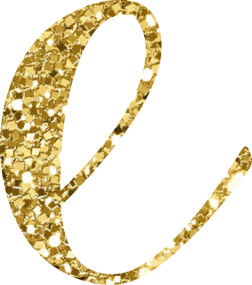
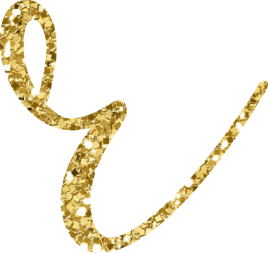
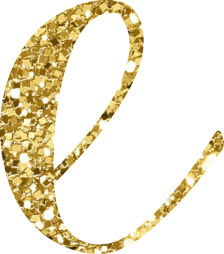
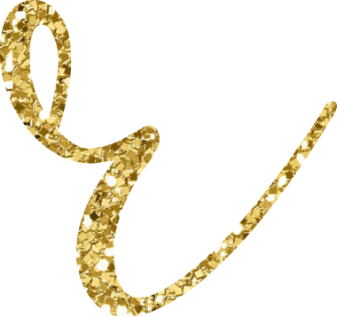

My interests when I was younger were much more wild than these days. I have always had the need for some type of thrill so I have always enjoyed roller coasters, big jumps, flying in planes, and doing new things. I am also very nosy by nature so one of my big things I enjoy doing is logorithms. I like to take notice of habits and why people do the things they do. I am sure my whole family thinks I am too nosy because I know everyone's schedule and always seem to have eyes in the back of my head. I think I am like that because people are predictable to a certain point and so if I take notice of things then maybe my teenager will not get over on me. So to keep the brain sharp, I do puzzles, sudukus, and crosswords.
When it comes to my Interests now-a-days, they are pretty boring, I guess. I don't have time to have any interests with small children at this point. Their interests are my interests but I do love the things listed below. I would like to try something exciting like diving out of an airplane or something else exhilerating but for now I love baby cartoons and the wheels on the bus song.
I love candy skulls and Day of the Dead
Doing fun new colors and styles to my hair and others hair
Creating fun and exciting makeup ideas